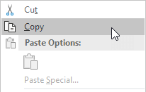

Rumus dan Fungsi
Masukkan Rumus | Mengedit Rumus | Prioritas Operator | Salin/Tempel Rumus | Sisipkan Fungsi
Sebuah rumus adalah ekspresi yang menghitung nilai sel. Fungsi adalah rumus yang telah ditentukan sebelumnya dan sudah tersedia di Excel. Misalnya, sel A3 di bawah ini berisi rumus yang menambahkan nilai sel A2 ke nilai sel A1.
Misalnya, sel A3 di bawah ini berisi fungsi SUM yang menghitung jumlah rentang A1:A2.

Masukkan Formula
Untuk memasukkan rumus, jalankan langkah-langkah berikut.
Misalnya, ketikkan rumus A1+A2.
Tip: daripada mengetik A1 dan A2, cukup pilih sel A1 dan sel A2.
Ubah nilai sel A1 menjadi 3.

Excel secara otomatis menghitung ulang nilai sel A3. Ini adalah salah satu fitur Excel yang paling kuat!
Mengedit Formula
Saat Anda memilih sel, Excel memperlihatkan nilai atau rumus sel di bilah rumus.

Untuk mengedit rumus, klik di bilah rumus dan ubah rumus.

Tekan Enter.

Prioritas Operator
Excel menggunakan urutan default di mana perhitungan terjadi. Jika bagian dari rumus ada dalam tanda kurung, bagian itu akan dihitung terlebih dahulu. Kemudian melakukan perhitungan perkalian atau pembagian. Setelah ini selesai, Excel akan menambah dan mengurangi sisa rumus Anda. Lihat contoh di bawah ini.

Pertama, Excel melakukan perkalian (A1 * A2). Selanjutnya, Excel menambahkan nilai sel A3 ke hasil ini.
Contoh lain,

Pertama, Excel menghitung bagian dalam tanda kurung (A2+A3). Selanjutnya, hasil ini dikalikan dengan nilai sel A1.
Salin/Tempel Rumus
Saat Anda menyalin rumus, Excel secara otomatis menyesuaikan referensi sel untuk setiap sel baru tempat rumus disalin. Untuk memahaminya, lakukan langkah-langkah berikut.
Masukkan rumus yang ditunjukkan di bawah ini ke dalam sel A4.

Pilih sel A4, klik kanan, lalu klik Salin (atau tekan CTRL + c)...

... selanjutnya, pilih sel B4, klik kanan, lalu klik Tempel di bawah 'Opsi Tempel:' (atau tekan CTRL + v).

Anda juga dapat menyeret rumus ke sel B4. Pilih sel A4, klik di sudut kanan bawah sel A4 dan seret ke sel B4. Ini jauh lebih mudah dan memberikan hasil yang sama persis!

Hasil. Rumus di sel B4 mereferensikan nilai di kolom B.

Sisipkan Fungsi
Setiap fungsi memiliki struktur yang sama. Misalnya, SUM(A1:A4). Nama fungsi ini adalah SUM. Bagian antara tanda kurung (argumen) berarti kami memberikan Excel rentang A1:A4 sebagai input. Fungsi ini menambahkan nilai dalam sel A1, A2, A3 dan A4. Tidak mudah untuk mengingat fungsi dan argumen mana yang digunakan untuk setiap tugas. Untungnya, fitur Sisipkan Fungsi di Excel membantu Anda dalam hal ini.
Untuk menyisipkan fungsi, jalankan langkah-langkah berikut.
Klik tombol Sisipkan Fungsi.

Kotak dialog 'Sisipkan Fungsi' muncul.
Cari fungsi atau pilih fungsi dari kategori. Misalnya, pilih COUNTIF dari kategori Statistik.

Klik Oke.
Kotak dialog 'Argumen Fungsi' muncul.
Klik Oke.

Hasil. Fungsi COUNTIF menghitung jumlah sel yang lebih besar dari 5.

Catatan: daripada menggunakan fitur Sisipkan Fungsi, cukup ketik =COUNTIF(A1:C2,">5"). Saat Anda tiba di: =COUNTIF( alih-alih mengetik A1:C2, cukup pilih rentang A1:C2.
Fungsi yang Paling Banyak Digunakan
1. JUMLAH
Untuk menghitung jumlah sel yang berisi angka, gunakan fungsi COUNT di Excel.

Catatan: gunakan COUNTA untuk menghitung semua sel yang tidak kosong. COUNTA adalah singkatan dari hitung semua.
2. SUM
Untuk menjumlahkan rentang sel, gunakan fungsi SUM di Excel. Fungsi SUM di bawah ini menjumlahkan semua nilai di kolom A.


Catatan: Anda juga dapat menggunakan fungsi SUM untuk menjumlahkan seluruh baris. Misalnya, =SUM(5:5) menjumlahkan semua nilai di baris ke-5.
3. JIKA
Fungsi IF memeriksa apakah suatu kondisi terpenuhi, dan mengembalikan satu nilai jika benar dan nilai lain jika salah.

Penjelasan: jika skor lebih besar dari atau sama dengan 60, fungsi IF yang ditunjukkan di atas mengembalikan Lulus, jika tidak mengembalikan Gagal. Untuk menyalin rumus ini dengan cepat ke sel lain, klik di sudut kanan bawah sel C2 dan seret ke bawah ke sel C6.
4. RATA-RATA
Untuk menghitung rata-rata sekelompok angka, gunakan fungsi AVERAGE (tidak ada ilmu roket di sini). Rumus di bawah ini menghitung rata-rata dari 3 angka teratas dalam rentang A1:A6.

Penjelasan: fungsi LARGE mengembalikan konstanta array {20,15,10}. Konstanta array ini digunakan sebagai argumen untuk fungsi AVERAGE , memberikan hasil 15.
5. COUNTIF
Fungsi COUNTIF di bawah ini menghitung jumlah sel yang berisi persis bintang + serangkaian karakter nol atau lebih.

Penjelasan: tanda bintang (*) cocok dengan serangkaian karakter nol atau lebih. Kunjungi halaman kami tentang fungsi COUNTIF untuk informasi dan contoh lebih lanjut.
6. SUMIF
Fungsi SUMIF di bawah ini menjumlahkan nilai dalam rentang B1:B5 jika sel yang sesuai dalam rentang A1:A5 berisi persis lingkaran + 1 karakter.

Penjelasan: tanda tanya (?) cocok dengan tepat satu karakter. Kunjungi halaman kami tentang fungsi SUMIF untuk informasi dan contoh lebih lanjut.
7. VLOOKUP
Fungsi VLOOKUP di bawah ini mencari nilai 53 (argumen pertama) di kolom paling kiri dari tabel merah (argumen kedua). Nilai 4 (argumen ketiga) memberi tahu fungsi VLOOKUP untuk mengembalikan nilai pada baris yang sama dari kolom keempat tabel merah.

Catatan: kunjungi halaman kami tentang fungsi VLOOKUP untuk mempelajari lebih lanjut tentang fungsi Excel yang hebat ini.
8. MIN
Untuk mencari nilai minimum, gunakan fungsi MIN. Ini sesederhana kedengarannya.

9. MAX
Untuk mencari nilai maksimum, gunakan fungsi MAX.

Catatan: kunjungi bab kami tentang fungsi statistik untuk mempelajari lebih lanjut tentang Excel dan Statistik.
10. SUMPRODUCT
Untuk menghitung jumlah produk dari angka yang sesuai dalam satu atau beberapa rentang, gunakan fungsi SUMPRODUCT Excel yang kuat.

Penjelasan: fungsi SUMPRODUCT melakukan perhitungan ini: (2 * 1000) + (4 * 250) + (4 * 100) + (2 * 50) = 3500.
Bab
Count and Sum
Logika
Referensi Sel
Tanggal Waktu
Teks
Pencarian & Referensi
Keuangan
Statistik
Bulat
Kesalahan Rumus
Rumus Array
Fungsi
Temukan bagaimana fungsi di Excel membantu Anda menghemat waktu. Jika Anda baru mengenal fungsi di Excel, kami menyarankan Anda untuk membaca pengantar kami tentang Rumus dan Fungsi terlebih dahulu.
Count and Sum : Fungsi yang paling banyak digunakan di Excel adalah fungsi count dan sum. Anda dapat menghitung dan menjumlahkan berdasarkan satu kriteria atau beberapa kriteria.
Logika : Pelajari cara menggunakan fungsi logika Excel, seperti IF, AND, OR dan NOT.
Referensi Sel : Referensi sel di Excel sangat penting. Pahami perbedaan antara referensi relatif, absolut, dan campuran, dan Anda sedang menuju kesuksesan.
Tanggal & Waktu : Untuk memasukkan tanggal, gunakan karakter "/" atau "-". Untuk memasukkan waktu, gunakan ":" (titik dua).
Teks : Excel memiliki banyak fungsi untuk ditawarkan dalam hal memanipulasi string teks.
Pencarian & Referensi : Pelajari semua tentang fungsi pencarian & referensi Excel, seperti VLOOKUP, HLOOKUP, MATCH, INDEX dan CHOOSE.
Financial: Bab ini menggambarkan fungsi keuangan Excel yang paling populer.
Statistik: Gambaran umum dari beberapa fungsi statistik yang sangat berguna di Excel.
Round: Bab ini menggambarkan tiga fungsi untuk membulatkan angka di Excel. ROUND, ROUNDUP dan ROUNDDOWN.
Rumus Kesalahan: Bab ini mengajarkan Anda bagaimana menangani beberapa kesalahan rumus umum.
Rumus Array: Bab ini membantu Anda memahami rumus array di Excel. Rumus array sel tunggal melakukan beberapa perhitungan dalam satu sel.